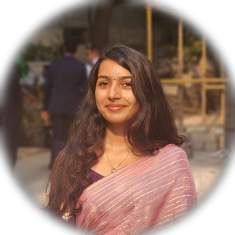

Computer Architecture · ASIC Design · Digital IC · SoC Verification
Graduate student at the University of Illinois Urbana-Champaign (MEng ECE, Dec 2026), with 2+ years of industry experience designing and verifying ASIC silicon at Samsung Semiconductors. I work at the intersection of RTL design, microarchitecture, and SoC verification.

Open to internship and full-time opportunities in digital IC design, computer architecture, and SoC verification.